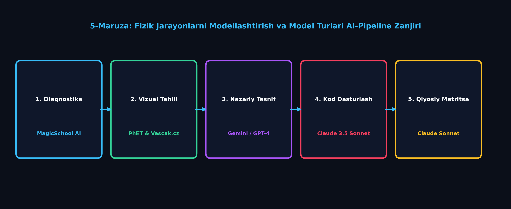
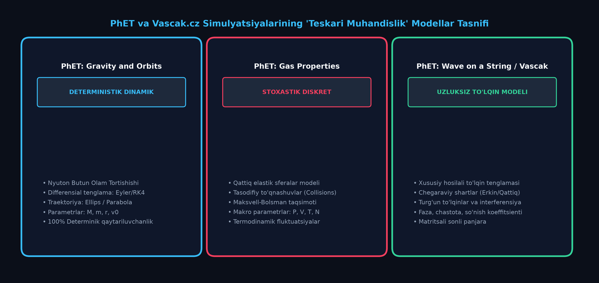
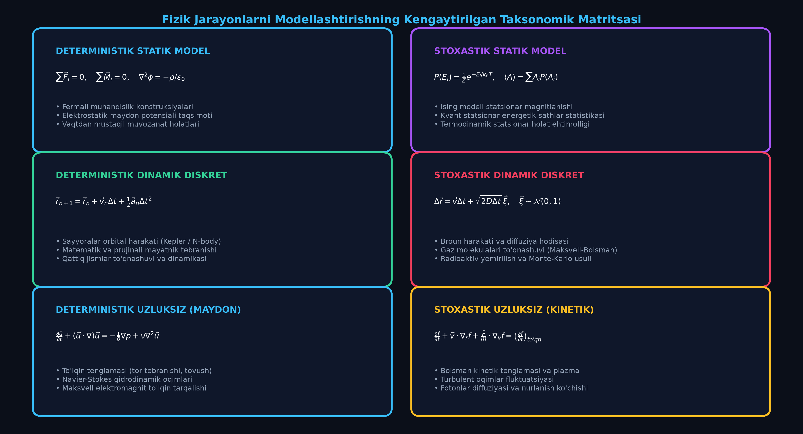

Fizik Jarayonlarni Modellashtirish — Bilish Metodi Sifatida.
Model Turlari va AI-Integratsiyasi
Fizik bilish metodologiyasida Statik va Dinamik, Deterministik va Stoxastik, Diskret va Uzluksiz modellar tasnifi har tomonlama o'rganiladi. PhET Interactive Simulations (Gravity and Orbits, Gas Properties, Wave on a String) hamda Vascak.cz platformalarining simulyatsiyalari teskari muhandislik (Reverse Engineering) orqali tahlil qilinib, Claude 3.5 Sonnet yordamida deterministik Kepler harakati hamda stoxastik Maksvell-Bolsman gaz kinetikasi interaktiv modellari yaratiladi.
📋 Ma'ruza Rejasi va Didaktik Integratsiya Bosqichlari:
MagicSchool AI orqali talabaning model turlari (Statik/Dinamik, Deterministik/Stoxastik) bo'yicha tayyorgarligini testlash.
PhET (Gas Properties, Gravity and Orbits) va Vascak.cz simulyatsiyalarining teskari muhandislik tasnifi.
Gemini 1.5 Pro / GPT-4 orqali 6-katakli kengaytirilgan taksonomik matritsani matematik formalizatsiya qilish.
Claude 3.5 Sonnet yordamida Kepler orbitasi (deterministik) va 2D Gaz kinetikasi (stoxastik) dasturiy ta'minotini yozish.
Claude Sonnet orqali hisoblash murakkabligi, xatolik manbalari va didaktik qo'llash tavsiyanomasini ishlab chiqish.
Kepler elliptik harakati va Maksvell-Bolsman tezliklar taqsimoti jonli telemetriyali veb-simulyatori.
🔬 5-Mavzu Bo'yicha Ilmiy AI-Pipeline Konveyeri:

1. Modellashtirish — Bilishning Universal Metodi Sifatida
Fizika fanida modellashtirish — bu real dunyodagi murakkab fizik hodisa, jism yoki tizimning eng muhim qonuniyatlarini saqlagan holda, uning soddalashtirilgan abstrakt nusxasini (modelini) yaratish va o'rganish jarayonidir. Real fizik obyektlar cheksiz ko'p faktorlar (havo qarshiligi, harorat o'zgarishi, gravitatsion nobirjinslik, relyativistik effektlar) ta'sirida bo'ladi. Ularning barchasini birdaniga hisobga olish inson miyasi uchun ham, eng kuchli superkompyuterlar uchun ham imkonsizdir.
1. Obyekt va Abstraksiya
Real jism o'lchamlari trayektoriya uzunligiga nisbatan juda kichik bo'lsa, u moddiy nuqta deb olinadi. Molekulalar o'zaro ta'sir kuchlari hisobga olinmasa, ideal gaz modeli yuzaga keladi.
2. Matematik Model
Fizika qonunlarining differensial va algebraik tenglamalar ko'rinishidagi ifodasi: Nyutonning 2-qonuni, Maksvell elektrodinamika tenglamalari, Shryodinger to'lqin tenglamasi.
3. Kompyuter Eksperimenti
Matematik tenglamalarning sonli usullar (Euler, RK4, Monte-Karlo) yordamida diskretlashtirilgan dasturiy kodi va interaktiv simulyatsiyasi orqali yangi bilimlarni kashf etish.
Fizik Modellashtirish Zanjiri:
2. PhET va Vascak.cz Simulyatsiyalarining Teskari Muhandisligi (Reverse Engineering) va Modellarni Tasniflash Metodologiyasi
Oliy ta'lim talabalarida ilmiy-tadqiqot va dasturlash ko'nikmalarini shakllantirishning eng samarali usullaridan biri — jahon miqyosidagi ochiq fizik simulyatsiyalar (Kolorado universitetining PhET Interactive Simulations va Chexiya o'qituvchisi Vladimir Vascakning Vascak.cz resurslari) motorini teskari muhandislik (Reverse Engineering) usulida tahlil qilishdir. Bu yondashuv tayyor animatsiyani shunchaki tomosha qilishdan farqli o'laroq, animatsiya orqasida yotgan differensial tenglamalar, chegaraviy shartlar, saqlanish qonunlari va sonli algoritmlarni aniqlash hamda qayta tiklash imkonini beradi.

🔬 Teskari Muhandislikning 5 Bosqichli Ilmiy-Metodologik Algoritmi:
Simulyatsiyadagi jism harakati (aylana, ellips, to'lqin, to'qnashuv) va boshqaruvchi slayderlar ro'yxatini tuzish.
Tizimning erkinlik darajalarini aniqlash: $\vec{S}(t) = \{x, y, z, v_x, v_y, v_z, m, T, P\}$.
Harakatni boshqaruvchi asosiy differensial yoki statistik tenglamalarni (Nyuton, Maksvell, Bolsman) yozish.
Elastik devorlar, ochiq chegaralar, so'nish koeffitsientlari va cheklovlarni formalizatsiya qilish.
Claude 3.5 Sonnet / Python yordamida modelning soddalashtirilgan ishchi HTML5 Canvas prototipini yaratish.
🌐 PhET Interactive Simulations Loyihalarining Chuqur Teskari Muhandisligi:
1. PhET: Gravity and Orbits (Gravitatsiya va Orbital Harakat)
Deterministik Dinamik Uzluksiz
Matematik Model: Ikki jism gravitatsion o'zaro ta'siri Nyutonning 2-qonuni va Butun olam tortishish qonuni orqali 2-tartibli nochiziqli differensial tenglamalar sistemasi ko'rinishida yoziladi:
$$\frac{d^2\vec{r}}{dt^2} = - \frac{G M}{r^3} \vec{r} \iff \begin{cases} \frac{dv_x}{dt} = - \frac{GM x}{(x^2+y^2)^{3/2}} \\ \frac{dv_y}{dt} = - \frac{GM y}{(x^2+y^2)^{3/2}} \end{cases}$$
Saqlanish Qonunlari (Invariantlar):
• To'liq mexanik energiya: $E = \frac{1}{2}m(v_x^2 + v_y^2) - \frac{GMm}{\sqrt{x^2+y^2}} = \text{const}$
• Burchak momenti (Impuls momenti): $\vec{L} = \vec{r} \times m\vec{v} = m(x v_y - y v_x)\vec{k} = \text{const}$
• Laplas-Runge-Lents vektori $\vec{A} = \vec{v} \times \vec{L} - GMm\frac{\vec{r}}{r} = \text{const}$ (orbita perigeliysining fazoda burilmasligini ta'minlaydi).
- Orbita Geometriyasi: $v_0 = \sqrt{GM/r_0}$ bo'lganda doira ($e=0$), $v_0 < \sqrt{2GM/r_0}$ da ellips ($0 < e < 1$), $v_0 = \sqrt{2GM/r_0}$ da parabola ($e=1$), $v_0 > \sqrt{2GM/r_0}$ da giperbola ($e>1$).
- Sonli Integrator: PhET bu simulyatsiyada oddiy Eyler usulini ishlata olmaydi (chunki orbita spiral shaklida portlaydi). Simplektik Verlet yoki 4-tartibli Runge-Kutta (RK4) usuli qo'llanilgan.
- Tasnifi: 100% Deterministik Dinamik Model — boshlang'ich koordinata $(x_0, y_0)$ va tezlik $(v_{x0}, v_{y0})$ ma'lum bo'lsa, istalgan kelajak vaqt $t$ dagi holat Koshi teoremasiga ko'ra bir qiymatli aniqlanadi.
2. PhET: Gas Properties (Ideal Gaz Xossalari va MKT)
Stoxastik Dinamik Diskret
Matematik Model: $N$ ta mutlaq elastik qattiq disklar (Hard-Sphere Model). Zarrachalar to'qnashuvida impuls va mexanik energiya saqlanadi:
$$\vec{v}_1' = \vec{v}_1 - \frac{2 m_2}{m_1+m_2}\frac{(\vec{v}_1-\vec{v}_2)\cdot(\vec{r}_1-\vec{r}_2)}{\|\vec{r}_1-\vec{r}_2\|^2}(\vec{r}_1-\vec{r}_2)$$
Makroskopik va Mikroskopik Parametrlar Bog'liqligi:
• Devorga berilgan impuls oqimi va Bosim: $P = \frac{1}{A \Delta t} \sum_{k} 2 m |v_{\perp, k}|$
• Harorat va O'rtacha Kinetik Energiya: $\langle E_k \rangle = \frac{1}{2}m\langle v^2 \rangle = k_B T \quad \text{(2D holatda)}$
• Maksvell-Bolsman tezliklar taqsimoti:
$$f(v) = \frac{m}{k_B T} v \exp\left(-\frac{m v^2}{2 k_B T}\right)$$
- Dinamik Xaos va Tasodifiylik: Garchi har bir to'qnashuv Nyuton mexanikasiga bo'ysunsa-da, $N \sim 100$ ta zarrachada traektoriyalarning boshlang'ich shartlarga o'ta yuqori sezgirligi (Lyapunov eksponentasi $\lambda > 0$) tufayli tizim xaotik bo'ladi.
- Statistik Muvozanat: Boshida barcha zarrachalarga bir xil tezlik berilsa ham, 2-3 soniya to'qnashuvlardan so'ng tezliklar Maksvell taqsimoti egri chizig'iga o'z-o'zidan kelib tushadi.
- Tasnifi: Stoxastik Dinamik Diskret Model — alohida zarracha traektoriyasi tasodifiy (Broun harakati), ammo butun ansambl qat'iy statistik qonuniyatlarga bo'ysunadi.
3. PhET: Wave on a String (Torda To'lqin Tarqalishi)
Deterministik Uzluksiz Maydon Modeli
Matematik Model: 1D tor tebranishining xususiy hosilali differensial to'lqin tenglamasi (D'Alamber tenglamasi):
$$\frac{\partial^2 u}{\partial t^2} = v^2 \frac{\partial^2 u}{\partial x^2} - \gamma \frac{\partial u}{\partial t}, \quad v = \sqrt{\frac{T_{\text{taranglik}}}{\mu_{\text{chiziqli zichlik}}}}$$
Chegaraviy Shartlar (Boundary Conditions):
• Qattiq mahkamlangan uch (Fixed End): $u(L, t) = 0 \implies$ to'lqin $\pi$ faza siljishi bilan qaytadi (to'ntariladi).
• Erkin uch (Loose End): $\frac{\partial u}{\partial x}\big|_{x=L} = 0 \implies$ to'lqin faza o'zgarmasdan qaytadi.
• Cheksiz muhit (No End): Chegaradan to'lqin qaytmasdan to'liq yutiladi.
- Diskretlash Usuli: Uzluksiz tor kompyuterda $N$ ta o'zaro prujinalar bilan ulangan diskret moddiy nuqtalar zanjiri (Chekli Ayirmalar — FDM) sifatida modellangan.
- Rezonans va Turg'un To'lqinlar: Manba chastotasi $\nu = \frac{n v}{2L}$ bo'lganda, torda turg'un to'lqinlar (tugunlar va bo'rtiqlar) hosil bo'ladi.
- Tasnifi: Deterministik Uzluksiz Maydon Modeli — fazoda vaqt bo'yicha to'lqin maydoni $u(x, t)$ ning evolyutsiyasini aniq ifodalaydi.
🇨🇿 Vascak.cz Fizik Simulyatsiyalari Bazasining Didaktik va Teskari Muhandislik Tahlili:
Vascak.cz — Chexiyalik fizik Vladimir Vascak tomonidan yaratilgan, 200 dan ortiq interaktiv HTML5 Canvas animatsiyalarini o'z ichiga olgan jahon miqyosidagi ochiq ta'lim platformasidir. Vascak simulyatsiyalarining asosiy kuchi — ularning vizual soddaligi, harakat formulalari bilan bevosita ko'rgazmali bog'langanligi va brauzerda o'ta tez (60 FPS) ishlashidadir.
1. Mexanika Bo'limi (Vascak.cz)
Modellar: Kepler qonunlari, Matematik mayatnik, Prujinali ossilyator, Erkin tushish.
Tasnifi: Deterministik Dinamik Model.
Didaktik Qo'llanish: Nyuton mexanikasi tenglamalarining qat'iy analitik va sonli yechimlari orqali trayektoriya va energiyaning vaqt bo'yicha o'zgarishini ko'rsatish.
2. Molekulyar Fizika & MKT
Modellar: Broun harakati (Brownian Motion), Karno sikli, Gaz qonunlari (Boyl-Mariott, Gey-Lyussak).
Tasnifi: Stoxastik & Fenomenologik Model.
Didaktik Qo'llanish: Og'ir chang zarrachasining engil molekulalar zarbasi ostida xaotik siljishi (Langevin tenglamasi) orqali stoxastik dinamikani tushuntirish.
3. Elektrodinamika & To'lqinlar
Modellar: Doppler effekti, RLC zanjiri tebranishlari, Lorents kuchi, Yung interferensiyasi.
Tasnifi: Deterministik Maydon va Garmonik Model.
Didaktik Qo'llanish: To'lqin frontlarining sferik tarqalishi va faza superpozitsiyasini vizual ko'rish.
📊 PhET va Vascak.cz Simulyatsiyalarining Teskari Muhandislik Pasporti:
| Platforma & Simulyatsiya | Boshqariluvchi Kirish Parametrlari | Tiklanuvchi Matematik Model | Modelning Taksonomik Turi | Didaktik Ahamiyati |
|---|---|---|---|---|
| PhET: Gravity & Orbits | Massalar $M, m$, Boshlang'ich radius $r_0$, Tezlik $v_0$ | $\vec{a} = -GM\vec{r}/r^3$ (Koshi masalasi) | Deterministik Dinamik | Orbita barqarorligi va Nyuton mexanikasi determinizmini isbotlash |
| PhET: Gas Properties | Molekulalar soni $N$, Harorat $T$, Hajm $V$ | Elastik to'qnashuvlar & Maksvell-Bolsman taqsimoti | Stoxastik Diskret | Xaosdan statistik qonuniyat (Maksvell egri chizig'i) kelib chiqishini ko'rsatish |
| PhET: Wave on String | Amplituda $A$, Chastota $\nu$, Taranglik $T$, So'nish $\gamma$ | $\partial^2 u/\partial t^2 = v^2 \partial^2 u/\partial x^2 - \gamma \partial u/\partial t$ | Uzluksiz Maydon | Turg'un to'lqinlar, rezonans va chegaraviy shartlarni o'rganish |
| Vascak: Brownian Motion | Zarrachalar radiusi $R$, Harorat $T$, Zarrachalar soni | Langevin tenglamasi: $m\dot{v} = -\gamma v + \xi(t)$ | Stoxastik Dinamik | Fluktuatsiya-dissipatsiya teoremasi va Broun diffuziyasini tushuntirish |
| Vascak: RLC Circuit | Induktivlik $L$, Sig'im $C$, Qarshilik $R$, Kuchlanish $U_0$ | $L\ddot{q} + R\dot{q} + q/C = U(t)$ | Deterministik Garmonik | Elektromagnit tebranishlar va so'nish dekrementini tahlil qilish |
PhET va Vascak.cz platformalarini "teskari muhandislik" qilish orqali talabalar passiv foydalanuvchidan aktiv fizik-tadqiqotchi va model arxitektori darajasiga ko'tariladilar. Bu metod orqali talaba har qanday fizik jarayonni ko'rgan zahoti uning differensial tenglamasini, chegaraviy shartlarini va adekvat model turini aniqlash malakasiga ega bo'ladi.
3. Modellar Tasnifi (Taksonomiyasi) va Nazariy Solishtirish
Gemini 1.5 Pro va GPT-4 yordamida olib borilgan ilmiy-metodologik tahlillar asosida fizik modellar 3 ta asosiy koordinata o'qi bo'yicha 6 ta yirik sinfga ajratiladi.

Modellar Tasnifining 3 Asosiy Mezoni:
1. Vaqt omili: Statik vs Dinamik
Statik: Tizim parametrlari vaqt o'tishi bilan o'zgarmaydi ($\partial / \partial t = 0$). Muvozanat shartlari: $\sum \vec{F} = 0, \sum \vec{M} = 0$.
Dinamik: Tizim holati vaqt o'tishi bilan evolyutsiya qiladi: $\frac{d\vec{p}}{dt} = \vec{F}$.
2. Tasodifiylik: Deterministik vs Stoxastik
Deterministik: Boshlang'ich shartlar berilsa, yechim 100% bir qiymatli yagona bo'ladi (Koshi masalasi).
Stoxastik: Tasodifiy ehtimolliklar, fluktuatsiyalar va Monte-Karlo statistikasi ustuvor bo'ladi.
3. Fazoviy tuzilma: Diskret vs Uzluksiz
Diskret: Alohida moddiy nuqtalar, molekulalar, tugunlar $(x_i, v_i)$ orqali ifodalanadi.
Uzluksiz: Tutash muhit maydonlari $\rho(x,y,z), P(x,y,z), \vec{v}(x,y,z)$ va xususiy hosilali differensial tenglamalar (PDE).
4. Claude 3.5 Sonnet: Deterministik va Stoxastik Modellar Dasturiy Kodi
Quyida Claude 3.5 Sonnet tomonidan generatsiya qilingan va o'quv jarayonida bevosita qo'llanilishi mumkin bo'lgan ikkita fundamental model kodi keltirilgan:
1. Deterministik Kepler Harakati Kodi (Python / JS)
// Deterministik Kepler Simplektik Integratori
function stepKepler(planet, GM, dt) {
const r2 = planet.x * planet.x + planet.y * planet.y;
const r = Math.sqrt(r2);
// Gravitatsiya tezlanishi a = -GM / r^3 * r
const a = -GM / (r2 * r);
const ax = a * planet.x;
const ay = a * planet.y;
// Simplektik Eyler-Kromer (v yangilanib, keyin x topiladi)
planet.vx += ax * dt;
planet.vy += ay * dt;
planet.x += planet.vx * dt;
planet.y += planet.vy * dt;
// Invariantlar: E va L
const Ek = 0.5 * (planet.vx**2 + planet.vy**2);
const Ep = -GM / r;
const Etot = Ek + Ep;
const L = planet.x * planet.vy - planet.y * planet.vx;
return { Etot, L };
}2. Stoxastik 2D Gaz To'qnashuvi Kodi (Python / JS)
// Stoxastik 2D Elastik To'qnashuvlar
function resolveParticleCollision(p1, p2) {
const dx = p2.x - p1.x;
const dy = p2.y - p1.y;
const dist2 = dx * dx + dy * dy;
const minDist = p1.r + p2.r;
if (dist2 < minDist * minDist) {
const dist = Math.sqrt(dist2) || 0.001;
const nx = dx / dist;
const ny = dy / dist;
// Nisbiy tezlik
const kx = p1.vx - p2.vx;
const ky = p1.vy - p2.vy;
const pvn = kx * nx + ky * ny;
if (pvn > 0) {
const impulse = (2 * pvn) / (p1.m + p2.m);
p1.vx -= impulse * p2.m * nx;
p1.vy -= impulse * p2.m * ny;
p2.vx += impulse * p1.m * nx;
p2.vy += impulse * p1.m * ny;
}
}
}5. Interaktiv Dual-Engine Sandbox: Deterministik vs Stoxastik Modellar
Quyidagi ikkita interaktiv fizik motor yordamida deterministik orbital harakat va stoxastik gaz kinetikasi qonuniyatlarini real vaqtda sinab ko'ring.
🌌 1-Motor: Deterministik Kepler Orbitasi
ODE / Simplektik💨 2-Motor: Stoxastik 2D Gaz Kinetikasi
MKT / Maksvell6. Taksonomik Taqqoslash Matritsasi va AI Diagnostik Test
| Model Turi | Matematik Apparat | Boshlang'ich Shartlar | Hisoblash Usuli | Xatolik Manbai | Tipik Fizik Misollar |
|---|---|---|---|---|---|
| Statik Deterministik | Algebraik / Laplas tenglamalari | Chegaraviy kuchlar va potensiallar | Matritsali Gauss, Chekli Elementlar (FEM) | Diskretlash panjarasi xatosi | Ko'prik fermalari, elektrostatik maydon potensiali |
| Dinamik Deterministik | Oddiy differensial tenglamalar (ODE) | Koshi shartlari $(x_0, v_0)$ | Euler-Cromer, Verlet, RK4 | Vaqt qadami kesish xatosi $O(\Delta t^p)$ | Kepler orbitasi, prujinali mayatnik, to'p harakati |
| Dinamik Stoxastik | Ehtimollar nazariyasi, MKT tenglamalari | Zarrachalar soni $N$, Harorat $T$ | Elastik to'qnashuvlar, Monte-Karlo | Statistik fluktuatsiya $O(1/\sqrt{N})$ | Broun harakati, ideal gaz, radioaktiv yemirilish |
| Uzluksiz Maydon Modeli | Xususiy hosilali tenglamalar (PDE) | Boshlang'ich va chegaraviy shartlar | Chekli ayirmalar (FDM), Chekli hajmlar (FVM) | Fazoviy va vaqt qadami xatosi | Navier-Stokes gidrodinamikasi, Maksvell to'lqinlari |
🧪 MagicSchool AI Diagnostik Testi (Model Turlari):
1-Savol: Ko'prik fermasi statik muvozanat modelida tashqi davriy kuch ta'sirida qanday holatda tizim dinamik modelga o'tishni talab qiladi?
2-Savol: Nima sababdan PhET "Gravity and Orbits" simulyatsiyasidagi ikki jism masalasi qat'iy deterministik model hisoblanadi?
3-Savol: Gaz molekulalari to'qnashuvida (PhET "Gas Properties") alohida molekula trayektoriyasi deterministik emas, balki stoxastik model orqali o'rganilishiga asosiy sabab nima?
📚 5-Modul Bo'yicha Ilmiy-Uslubiy Adabiyotlar Ro'yxati:
- Zeigler, B. P., Praehofer, H., & Kim, T. G. (2000). Theory of Modeling and Simulation (2nd ed.). Academic Press.
- Bunge, M. (1973). Method, Model and Matter. D. Reidel Publishing.
- Frigg, R., & Hartmann, S. (2020). Models in Science. Stanford Encyclopedia of Philosophy.
- Giere, R. N. (2004). How Models Are Used to Represent Reality. Philosophy of Science, 71(5).
- Halliday, D., Resnick, R., & Walker, J. (2018). Fundamentals of Physics (11th ed.). Wiley.
- Gould, H., Tobochnik, J., & Christian, W. (2016). An Introduction to Computer Simulation Methods (3rd ed.). Pearson.
- Vygotsky, L. S. (1978). Mind in Society: The Development of Higher Psychological Processes. Harvard University Press.
- Anderson, L. W., & Krathwohl, D. R. (2001). A Taxonomy for Learning, Teaching, and Assessing. Longman.